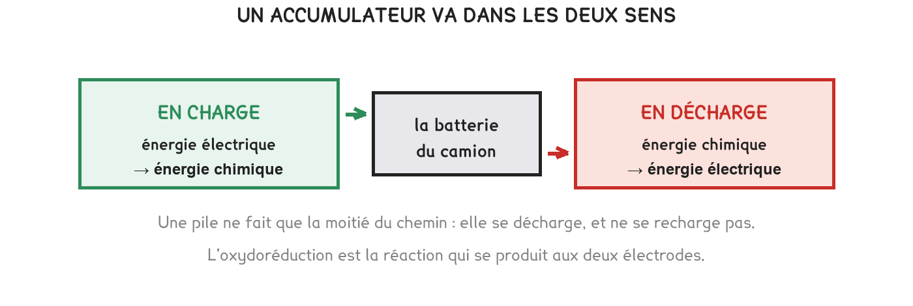

Tle Bac Pro CTRM
Une pile et une batterie font exactement la même chose, avec la même réaction. Un seul mot les sépare, et c'est lui qui décide si on la jette ou si on la recharge.
3 exercices · 24 items d'entraînement · 1 repli · 2 figures
Savoirs travaillés
Une pile et un accumulateur reposent sur la même réaction d’oxydoréduction : un métal perd des électrons, un autre les prend, et le déplacement fait un courant.
La différence tient dans un mot : réversible. La réaction d’un accumulateur se remonte, celle d’une pile non. Tout le reste en découle — le prix, l’usage, et ce qu’on en fait quand elle est vide.

Une pile ne fait que la moitié du chemin :
énergie chimique → énergie électrique
Un accumulateur fait les deux sens :
en charge, énergie électrique → énergie chimique stockable
Un accumulateur déchargé n’est pas hors service. Il est simplement au bout de sa réaction, dans un sens. Le recharger la remonte. C’est exactement ce qu’une pile ne sait pas faire — et c’est pourquoi on ne recharge jamais une pile, sous peine de la faire fuir ou éclater.
On ne « met » pas des électrons dans une batterie. Il en entre autant qu’il en sort : le circuit est fermé. Ce qu’on change, c’est la composition chimique des électrodes — on repousse la réaction dans l’autre sens, et l’énergie est stockée sous forme chimique.
L’image du réservoir qu’on remplit est commode et elle est fausse. Elle explique mal pourquoi une batterie chauffe en charge, pourquoi elle ne se recharge pas instantanément, et pourquoi elle vieillit. Le réservoir, lui, ne s’use pas.
Pour aller plus loin
Si la réaction se remonte parfaitement, une batterie devrait durer toujours. En pratique, elle perd quelques pour cent de capacité par an.
La réaction ne se remonte jamais tout à fait. À chaque cycle, une petite partie des produits se dépose sous une forme qui ne repart plus — un dépôt qui s’accumule, des électrodes qui se fissurent, un électrolyte qui se dégrade. Rien de tout cela n’est réversible.
C’est pour cela qu’un constructeur annonce une batterie en nombre de cycles, et non en années : 1 500 à 3 000 cycles pour du lithium-ion, après quoi il reste 70 à 80 % de la capacité d’origine. Sur un camion qui recharge chaque nuit, cela fait cinq à huit ans.
Deux gestes qui l’usent plus vite, et qu’on retrouve dans toutes les notices : la décharge complète et la charge rapide répétée. C’est la raison pratique de la réserve de 10 % qu’on garde en fin de décharge.
Exercice · CHIM
Un collègue veut recharger la pile de la télécommande du portail avec un chargeur de téléphone. Répondez-lui.
Exercice · ELEC
Un accumulateur passe de 1,15 V à vide à 1,42 V en fin de charge. De combien de millivolts la tension a-t-elle monté ?
Exercice · ELEC
Vous avez relevé la tension toutes les deux minutes, en charge puis en décharge. Décrivez les deux courbes, et dites ce qui distingue la fin de décharge.
On remplit chaque case, puis on vérifie la série entière d’un coup.
Série · ELEC
Série · ELEC
Série · ELEC
Série · ELEC
| Pile : un seul sens, elle se jette | accumulateur : les deux, il se recharge |
| Le mot qui les sépare est réversible | la réaction se remonte, ou non |
| Charger, c’est remonter la réaction | ce n’est pas remplir un réservoir d’électrons |
Cette page détaille l'activité 2 de la séquence. Elle ne remplace pas le TP et ne donne aucun corrigé.